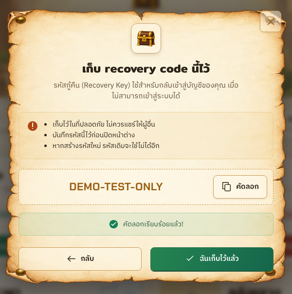
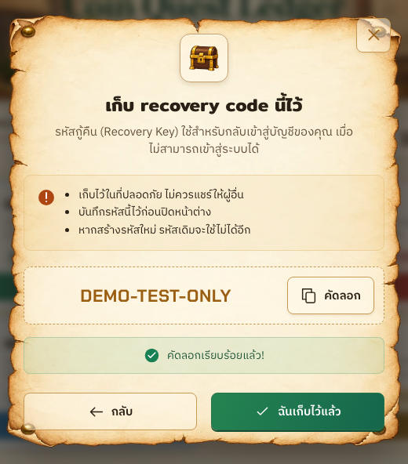
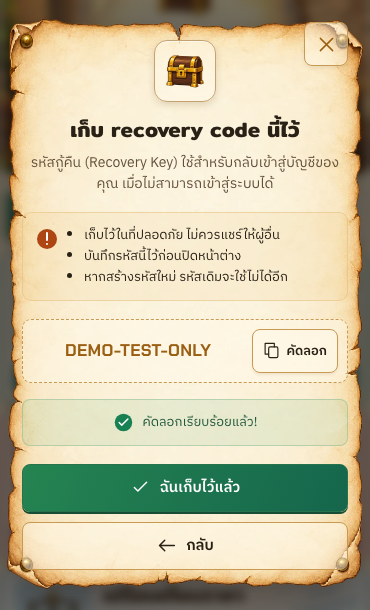

Recovery Key — reference / implementation
Local website · 14 October 2026 · synthetic test key only. Modal crops share an equal display width; aspect ratios are preserved. The reference annotations remain visible. Full captures retain the viewport and blurred page context.
Desktop · 1440 × 900
User reference · modal cropLocal implementation · copied state
Tablet · 768 × 1024
User reference · modal cropLocal implementation · copied state
Mobile · 390 × 844
User reference · modal cropLocal implementation · copied state
The current key uses the real 4-4-4 format. Precautions describe the existing account behavior; no one-time-only claim. Paper/chest assets come from the shared brand family. Implementation notes and test scope.